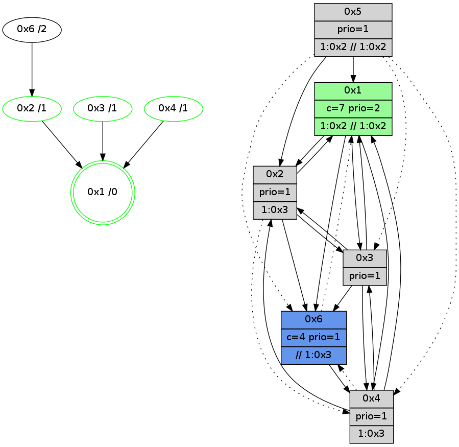

>> << IDX [start] -100 -25 -5 +0 +5 +25 +100 [900.21547699]
 Previous packets
----------------------------------------------------------------------
895.294395 beacon01(adaf) #0 coord=01,02,05,03,04,06 cycle=432.0ms assoc
-- color-indic=1 64 9c 3a
895.304356 beacon02(adaf) #0 coord=01,02,05,03,04,06 cycle=432.0ms assoc 64 cd c5
895.314356 beacon05(adaf) #0 coord=01,02,05,03,04,06 cycle=432.0ms assoc 64 6b ef
895.324356 beacon03(adaf) #0 coord=01,02,05,03,04,06 cycle=432.0ms assoc 64 f7 cb
895.334357 beacon04(adaf) #0 coord=01,02,05,03,04,06 cycle=432.0ms assoc 64 51 e1
895.344358 beacon06(adaf) #0 coord=01,02,05,03,04,06 cycle=432.0ms assoc 64 25 fd
895.356207 [STC(4)->1 #0.104 new-neigh,tree-change,inconsistent-stability,stable,to-color d=1]
895.358294 [Hello(3): seq=698 sym=6,4,1,2 sysInfo=hasWarning stat=6:1,10,6,1/4:2,0,4,0/1:10,4,1,1/2:1,1,2,0]
895.360532 [TreeStatus(4)-.->1 #0.104 new-neigh,tree-change,inconsistent-stability,stable child=1]
895.362410 [STC(2)->1 #0.104 new-neigh,tree-change,inconsistent-stability,stable,to-color d=1]
895.364208 [Color(1) seq=126 @0:0 color=7 prio=2 >1.@2,1.@3,1.@5 >>1.@2,1.@3 c=1,4,6;0,2,3,5]
895.366832 [STC(3)->1 #0.104 new-neigh,tree-change,inconsistent-stability,stable,to-color d=1]
895.369115 [Color(3) seq=84 @0:0 prio=1 c=4,7;0,1,2,5,6]
895.374222 [Color(2) seq=98 @0:0 prio=1 >1.@3 c=4,7;0,1,2,5,6]
----------------------------------------------------------------------
895.786503 beacon01(adaf) #0 coord=01,02,05,03,04,06 cycle=432.0ms assoc
-- color-indic=1 64 c2 5b
895.796464 beacon02(adaf) #0 coord=01,02,05,03,04,06 cycle=432.0ms assoc 64 93 a4
895.806464 beacon05(adaf) #0 coord=01,02,05,03,04,06 cycle=432.0ms assoc 64 35 8e
895.816464 beacon03(adaf) #0 coord=01,02,05,03,04,06 cycle=432.0ms assoc 64 a9 aa
895.826464 beacon04(adaf) #0 coord=01,02,05,03,04,06 cycle=432.0ms assoc 64 0f 80
895.836465 beacon06(adaf) #0 coord=01,02,05,03,04,06 cycle=432.0ms assoc 64 7b 9c
895.847619 [Hello(1): seq=600 sym=2,3 sysInfo=hasWarning,coloring-mode-on,ColoringModeRequestCalled stat=2:11,7,4,1/3:1,7,2,0]
895.850027 [Color(5) seq=44 @0:0 prio=1 >1.@2 >>1.@2,1.@3,1.@5 c=1,7;0,2,3,4,5,6]
895.851847 [Hello(2): seq=1189 sym=6,1,3 sysInfo=hasWarning stat=6:2,6,2,1/1:7,2,0,0/3:15,7,6,1]
895.853622 [Hello(4): seq=701 sym=1,3 asym=6 sysInfo=hasWarning stat=1:2,9,7,0/3:3,2,6,4/6:1,2,1,1]
----------------------------------------------------------------------
896.278612 beacon01(adaf) #0 coord=01,02,05,03,04,06 cycle=432.0ms assoc
-- color-indic=1 64 06 34
896.288573 beacon02(adaf) #0 coord=01,02,05,03,04,06 cycle=432.0ms assoc 64 57 cb
896.298573 beacon05(adaf) #0 coord=01,02,05,03,04,06 cycle=432.0ms assoc 64 f1 e1
896.308575 beacon03(adaf) #0 coord=01,02,05,03,04,06 cycle=432.0ms assoc 64 6d c5
896.318574 beacon04(adaf) #0 coord=01,02,05,03,04,06 cycle=432.0ms assoc 64 cb ef
896.328574 beacon06(adaf) #0 coord=01,02,05,03,04,06 cycle=432.0ms assoc 64 bf f3
896.340715 [Color(4) seq=67 @0:0 prio=1 >1.@3 c=7;1,4,6]
896.342666 [Hello(3): seq=699 sym=6,4,1,2 sysInfo=hasWarning stat=6:2,10,6,1/4:3,0,5,0/1:11,4,1,1/2:1,2,2,0]
896.344625 [Color(2) seq=99 @0:0 prio=1 >1.@3 c=4,7;0,1,2,5,6]
896.346425 [Color(6) seq=127 @0:0 color=4 prio=1 >>1.@3,1.@5 c=0,1,2,5,6,7;3]
896.351187 [Color(3) seq=85 @0:0 prio=1 c=4,7;0,1,2,5,6]
896.355291 [Color(1) seq=127 @0:0 color=7 prio=2 >1.@2,1.@3,1.@5 >>1.@2,1.@3 c=1,4,6;0,2,3,5]
----------------------------------------------------------------------
896.770720 beacon01(adaf) #0 coord=01,02,05,03,04,06 cycle=432.0ms assoc
-- color-indic=1 64 4a 84
896.780680 beacon02(adaf) #0 coord=01,02,05,03,04,06 cycle=432.0ms assoc 64 1b 7b
896.790683 beacon05(adaf) #0 coord=01,02,05,03,04,06 cycle=432.0ms assoc 64 bd 51
896.800683 beacon03(adaf) #0 coord=01,02,05,03,04,06 cycle=432.0ms assoc 64 21 75
896.810681 beacon04(adaf) #0 coord=01,02,05,03,04,06 cycle=432.0ms assoc 64 87 5f
896.820682 beacon06(adaf) #0 coord=01,02,05,03,04,06 cycle=432.0ms assoc 64 f3 43
896.832455 [Hello(4): seq=702 sym=1,3 asym=6 sysInfo=hasWarning stat=1:2,10,7,0/3:4,3,6,4/6:1,3,1,1]
896.835528 [Hello(1): seq=601 sym=2,4,3 sysInfo=hasWarning,coloring-mode-on,ColoringModeRequestCalled stat=2:12,7,4,1/4:0,0,0,0/3:1,7,2,0]
----------------------------------------------------------------------
897.262827 beacon01(adaf) #0 coord=01,02,05,03,04,06 cycle=432.0ms assoc
-- color-indic=1 64 8e eb
897.272788 beacon02(adaf) #0 coord=01,02,05,03,04,06 cycle=432.0ms assoc 64 df 14
897.282789 beacon05(adaf) #0 coord=01,02,05,03,04,06 cycle=432.0ms assoc 64 79 3e
897.292789 beacon03(adaf) #0 coord=01,02,05,03,04,06 cycle=432.0ms assoc 64 e5 1a
897.302790 beacon04(adaf) #0 coord=01,02,05,03,04,06 cycle=432.0ms assoc 64 43 30
897.312792 beacon06(adaf) #0 coord=01,02,05,03,04,06 cycle=432.0ms assoc 64 37 2c
897.324942 [Color(4) seq=68 @0:0 prio=1 >1.@3 c=7;1,4,6]
897.326877 [Hello(3): seq=700 sym=6,4,1,2 sysInfo=hasWarning stat=6:3,10,6,1/4:3,0,5,0/1:12,5,1,1/2:1,2,2,0]
897.328833 [Color(2) seq=100 @0:0 prio=1 >1.@3 c=4,7;0,1,2,5,6]
897.330337 [STC(1) #0.105 new-neigh,tree-change,inconsistent-stability,stable,to-color d=0]
897.331757 [Color(3) seq=86 @0:0 prio=1 c=4,7;0,1,2,5,6]
897.333896 [Color(1) seq=128 @0:0 color=7 prio=2 >1.@2,1.@3,1.@5 >>1.@2,1.@3 c=1,4,6;0,2,3,5]
897.340230 [Color(6) seq=128 @0:0 color=4 prio=1 >>1.@3,1.@5 c=0,1,2,5,6,7;3]
----------------------------------------------------------------------
897.754936 beacon01(adaf) #0 coord=01,02,05,03,04,06 cycle=432.0ms assoc
-- color-indic=1 64 c3 ec
897.764896 beacon02(adaf) #0 coord=01,02,05,03,04,06 cycle=432.0ms assoc 64 92 13
897.774897 beacon05(adaf) #0 coord=01,02,05,03,04,06 cycle=432.0ms assoc 64 34 39
897.784899 beacon03(adaf) #0 coord=01,02,05,03,04,06 cycle=432.0ms assoc 64 a8 1d
897.794898 beacon04(adaf) #0 coord=01,02,05,03,04,06 cycle=432.0ms assoc 64 0e 37
897.804899 beacon06(adaf) #0 coord=01,02,05,03,04,06 cycle=432.0ms assoc 64 7a 2b
897.816634 [Hello(6): seq=616 sym=4 asym=1 sysInfo=hasWarning,coloring-mode-on,ColoringModeIndicationCalled stat=4:0,0,0,0/1:3,15,5,1]
897.820550 [Hello(4): seq=703 sym=1,3 asym=6 sysInfo=hasWarning stat=1:3,11,8,0/3:5,4,6,4/6:1,4,1,1]
897.822609 [Hello(2): seq=1191 sym=6,1,3 asym=4 sysInfo=hasWarning stat=6:2,8,2,1/1:8,4,1,0/3:15,9,6,1/4:0,0,0,0]
897.825836 [STC(2)->1 #0.105 new-neigh,tree-change,inconsistent-stability,stable,to-color d=1]
897.827610 [Hello(1): seq=602 sym=2,4 sysInfo=hasWarning,coloring-mode-on,ColoringModeRequestCalled stat=2:12,7,4,1/4:0,0,0,0]
897.831460 [TreeStatus(2)-.->1 #0.105 new-neigh,tree-change,inconsistent-stability,stable child=1]
897.833815 [STC(4)->1 #0.105 new-neigh,tree-change,inconsistent-stability,stable,to-color d=1]
----------------------------------------------------------------------
898.247045 beacon01(adaf) #0 coord=01,02,05,03,04,06 cycle=432.0ms assoc
-- color-indic=1 64 07 83
898.257008 beacon02(adaf) #0 coord=01,02,05,03,04,06 cycle=432.0ms assoc 64 56 7c
898.267007 beacon05(adaf) #0 coord=01,02,05,03,04,06 cycle=432.0ms assoc 64 f0 56
898.277007 beacon03(adaf) #0 coord=01,02,05,03,04,06 cycle=432.0ms assoc 64 6c 72
898.287007 beacon04(adaf) #0 coord=01,02,05,03,04,06 cycle=432.0ms assoc 64 ca 58
898.297008 beacon06(adaf) #0 coord=01,02,05,03,04,06 cycle=432.0ms assoc 64 be 44
898.308554 [STC(6)->2-.->1 #0.105 new-neigh,tree-change,inconsistent-stability,to-color d=2]
898.312817 [Color(4) seq=69 @0:0 prio=1 >1.@3 c=7;1,4,6]
898.314803 [Color(2) seq=101 @0:0 prio=1 >1.@3 c=4,7;0,1,2,5,6]
898.319183 [Color(3) seq=87 @0:0 prio=1 c=4,7;0,1,2,5,6]
----------------------------------------------------------------------
898.739155 beacon01(adaf) #0 coord=01,02,05,03,04,06 cycle=432.0ms assoc
-- color-indic=1 64 4b 33
898.749116 beacon02(adaf) #0 coord=01,02,05,03,04,06 cycle=432.0ms assoc 64 1a cc
898.759117 beacon05(adaf) #0 coord=01,02,05,03,04,06 cycle=432.0ms assoc 64 bc e6
898.769116 beacon03(adaf) #0 coord=01,02,05,03,04,06 cycle=432.0ms assoc 64 20 c2
898.779116 beacon04(adaf) #0 coord=01,02,05,03,04,06 cycle=432.0ms assoc 64 86 e8
898.789118 beacon06(adaf) #0 coord=01,02,05,03,04,06 cycle=432.0ms assoc 64 f2 f4
898.799949 [Hello(1): seq=603 sym=2,4 sysInfo=hasWarning,coloring-mode-on,ColoringModeRequestCalled stat=2:12,8,4,2/4:0,1,1,0]
898.802346 [Color(5) seq=47 @0:0 prio=1 >1.@2 >>1.@2,1.@3,1.@5 c=1,7;0,2,3,4,5,6]
898.804537 [Hello(4): seq=704 sym=1,3 asym=6 sysInfo=hasWarning stat=1:3,11,8,0/3:5,5,6,4/6:1,4,1,1]
898.809927 [Hello(2): seq=1192 sym=6,1,3 asym=4 sysInfo=hasWarning stat=6:2,8,2,1/1:8,4,1,0/3:15,10,6,1/4:0,0,1,0]
----------------------------------------------------------------------
899.231262 beacon01(adaf) #0 coord=01,02,05,03,04,06 cycle=432.0ms assoc
-- color-indic=1 64 8f 5c
899.241223 beacon02(adaf) #0 coord=01,02,05,03,04,06 cycle=432.0ms assoc 64 de a3
899.251223 beacon05(adaf) #0 coord=01,02,05,03,04,06 cycle=432.0ms assoc 64 78 89
899.261224 beacon03(adaf) #0 coord=01,02,05,03,04,06 cycle=432.0ms assoc 64 e4 ad
899.271225 beacon04(adaf) #0 coord=01,02,05,03,04,06 cycle=432.0ms assoc 64 42 87
899.281224 beacon06(adaf) #0 coord=01,02,05,03,04,06 cycle=432.0ms assoc 64 36 9b
899.293606 [TreeStatus(4)-.->1 #0.105 new-neigh,tree-change,inconsistent-stability,stable child=1]
899.295067 [Color(1) seq=130 @0:0 color=7 prio=2 >1.@2,1.@3,1.@5 >>1.@2,1.@3 c=1,4,6;0,2,3,5]
899.297796 [Color(4) seq=70 @0:0 prio=1 >1.@3 c=7;1,4,6]
899.300860 [Hello(3): seq=702 sym=6,4,1,2 sysInfo=hasWarning stat=6:5,11,7,1/4:4,0,6,0/1:14,6,1,1/2:3,2,3,1]
899.303987 [Color(3) seq=88 @0:0 prio=1 c=4,7;0,1,2,5,6]
----------------------------------------------------------------------
899.723370 beacon01(adaf) #0 coord=01,02,05,03,04,06 cycle=432.0ms assoc
-- color-indic=1 64 57 18
899.733330 beacon02(adaf) #0 coord=01,02,05,03,04,06 cycle=432.0ms assoc 64 06 e7
899.743331 beacon05(adaf) #0 coord=01,02,05,03,04,06 cycle=432.0ms assoc 64 a0 cd
899.753331 beacon03(adaf) #0 coord=01,02,05,03,04,06 cycle=432.0ms assoc 64 3c e9
899.763331 beacon04(adaf) #0 coord=01,02,05,03,04,06 cycle=432.0ms assoc 64 9a c3
899.773333 beacon06(adaf) #0 coord=01,02,05,03,04,06 cycle=432.0ms assoc 64 ee df
899.785113 [Hello(4): seq=705 sym=2,1,3 asym=6 sysInfo=hasWarning stat=2:0,0,0,0/1:3,11,8,0/3:6,6,6,4/6:1,4,1,1]
899.788134 [Hello(1): seq=604 sym=2,4,6,3 sysInfo=hasWarning,coloring-mode-on,ColoringModeRequestCalled stat=2:13,8,4,2/4:0,2,1,0/6:0,0,0,0/3:0,1,0,0]
899.792224 [STC(1) #0.106 new-neigh,tree-change,inconsistent-stability,stable,to-color d=0]